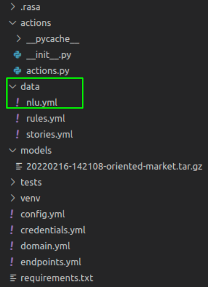
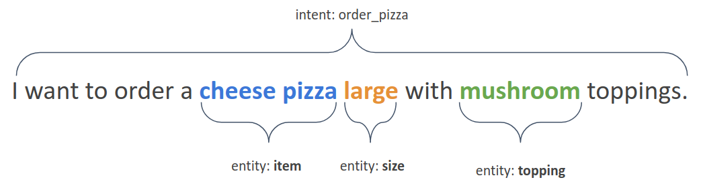
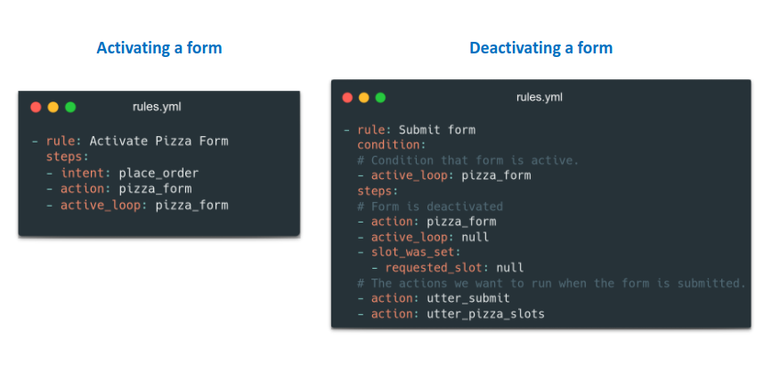

Tasks
- Follow the installation instructions and initialize your demo bot. Now you should have a folder PIBO with all the necessary files set up for you.
- For the first step, let us start with the easy part - creating training data. For this, you will work with the data folder provided to you. Note: All the training NLU data, stories, rules and lookup tables will be created under the data folder which will be the base for training your NLU model.

-
Start by creating NLU training data. Rasa NLU takes user input in unstructured human language form and extracts structured data in form of intents and entities. Intents are labels that represent goal or meaning and entities are important keywords that your assistant should take note of. To put it simply, intents are user intentions (verbs) that you want your assistant to handle and entities are pieces of user information (nouns) that you want your assistant to detect and store.

Now if you were to annotate this as Rasa NLU data, you would do it as follows in the nlu.yml file:
To follow best practices, it is good to add in 10-15 examples per intent before training your NLU model. Make sure you add variety in terms of the language structure rather than the nouns because we have lookup tables to deal with diverse entity value detection. Once you’re done with creating the NLU data, let us move on to lookup tables.
-
Lookup: As we mentioned earlier, training a model that detects multiple entities of the same type can be a tedious task. But thanks to lookups, we can simply list down all possible values for an entity in a lookup table and Rasa will take care of the rest. While listing the values, we have a separate yaml file where we list all known sets of values for a given entity. As mentioned in the official documentation, lookup tables are lists of words used to generate case-insensitive regular expression patterns. Lookups aren’t that complicated to get started with, know more about their correct usage here.
-
Knowledge base: Users will query about other attributes of an item in real-life settings, often known as dynamic queries, such as the price of a pizza or the toppings available for a specific style of pizza. To respond to this kind of inquiries from users, a knowledge base (also known as a database) about restaurants is required. However, in other domains, this information is dynamic and changes on a regular basis. As a result, all of this data cannot be hard-coded. This knowledge base can be integrated into Rasa by using Knowledge base action. Knowledge base action can also be used to deal with referential resolution. Referential resolution refers to correctly parsing the pronouns (such as it, the first one and the last one) into corresponding concrete objects. For more information about knowledge base, please refer to this link.
-
Stories and Rules
Next up is stories. You can think of a story as a script detailing the back and forth conversation between user and assistant, from beginning to end. It also is the basic unit of dialogue training data. It generalizes unseen conversations paths, and you add stories on stories.yml file inside data/ folder.
Since we used the rasa init command to create the assistant earlier, we should see a few examples already on stories.yml. Let’s take a look at it.
Here is one example with a story named happy path followed by steps that have intent and action pair. Action defines the hard coded response the bot should provide in case of a given intent prediction.
I hope you’re ready to add your own stories now. Let’s create a story Place order 1 which lets the user order the pizza and after that confirms the order of the user too.
Let me show you an example of action utter_ask_order.
We define these responses on a file called domain.yml which we’ll look into later on.
If you’re wondering what the conversation looks like for a given story, here is how it goes.
Now let’s talk about rules. It is a short piece of conversation that should always follow the same path. And it is great to handle specific conversations, but unlike stories, rules cannot generalize to unseen conversation paths. Like stories, you’ll add your rules on rules.yml inside the data/ directory. Let’s see an example.

-
Slots: In simple words, Slots are chatbots memory that enables it to store important details and later use them in a specific context. Let us assume that we have ordered a small size pizza and, after a certain time of conversation when the user wants the bot to repeat what has been ordered, at that point bot should be able to respond with small size pizza. The slot can be set in two different ways: using NLU data and by using Custom action.
Here is the basic template which should be added to the domain.yml file for using the slot. To know more about slots, refer to this link.
-
Custom Actions Till now, we were adding our response template directly to our domain file which was the easiest way to define the message an assistant sends the user once a specific utterance is predicted. But there is another way to achieve the same result - by creating custom actions. Custom actions are response actions that include custom code. That custom code can define anything from a simple text response to a backend integration - an API call, connecting to the database, or anything else your assistant needs to do.
Custom actions are defined in a file called actions.py inside the action folder.
Again, the rasa init function created a sample file for us, this time including the code for a simple Hello World custom action, which we will examine to better understand custom actions.
Next, we have a class of custom actions called ActionConfirmOrder. The class consists of two functions - name and run. The function name in the class must match the name of the custom action in your training stories (in stories.yml). For example, when the custom action action_confirm_order is included in a story, Rasa knows to run the code defined in the custom action class named action_confirm_order.
The run function within the class contains the code to be executed, once the custom action is predicted. The run function is where you can define what the custom action actually does. Note the tracker and dispatcher elements, which are very useful and important pieces of the run function: * the tracker keeps track of what happens at each point within a dialogue - what intents were predicted, which entities where extracted, as well as other information * the dispatcher is the element that sends the response back to the user.
Updating this actions file for our pizza confirmation would look like this. We created a class called ActionConfirmOrder that, when the action called action_confirm_order is predicted, the assistant retrieves the entity(which could be pizza you ordered eg. mushroom pizza) if it is present and respond with,”Order for placed for: mushroom pizza” or else it responds with,”Sorry, I couldn't get the item you want to order.” in case of none entity found.
-
Forms: Most of the time, chatbots are used to gather data from the user and take actions based on it. So, Forms are used to collect information from the user (For example: What size would you like your pizza to be?) and, the collected information is set in a slot for later use.
To use forms, we need to make sure that the Rule policy is set to config.yml file
Now, we need to define the form in domain.yml file
At last, we need to add a story or rule, which describes when to open or close the form.

To know more about forms, refer to this link.
-
Fallback and chitchats: Keeping the technical stuff aside, another major requirement we should be looking into while building chatbots is its versatility - its ability to gracefully fall back while the user diverts from the main topic and bring them back on track. On the other side, it should also be able to deal with a few chitchats and off-topic queries that the user might send. An example scenario would be as follows. Notice how a human and a chatbot would deal with a similar situation.
But if you train your chat assistant to deal with such situations with a few chitchats and fallback, your chat assistant could operate in such a way:
You might think, chitchats can be of multiple types - and the definition of chitchat can vary from person to person. So it wouldn’t be logical to add a different intent for each chitchat that exists. For this, Rasa provides the concept of sub-intents that branch out from the main intent. For instance, you can have a main intent called chitchat, and you can create sub-intents that denote possible categories of chitchat like chitchat/is_bot, chitchat/where_born, etc. And for your convenience, you can even craft different responses for these sub-intents.
A sample code snippet is here:
And the respective responses for each sub-intent can go into a separate responses.yml file like this:
-
Domain The domain is like the universe of your assistant which specifies all the intents, entities, slots, responses, forms and actions your bot should know about. It defines the environment in which the assistant operates including:
- What the user means: specifically, what intents and entities the model can understand
- What responses the model can provide: such as utterances or custom actions
- What to say next: what the model should be ready to respond with
- What info to remember: what information an assistant should remember and use throughout the conversation
Voilà